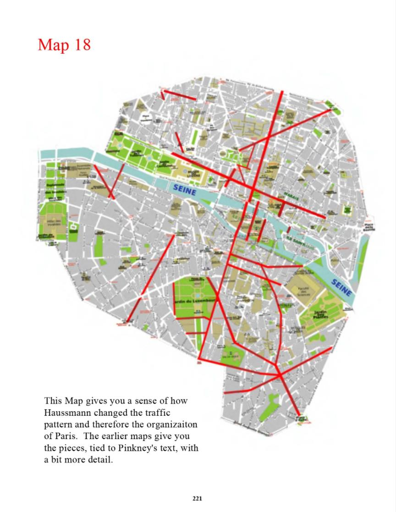

Map 18
This Map gives you a sense of how
Haussmann changed the traffic
pattern and therefore the organizaiton
of Paris. The earlier maps give you
the pieces, tied to Pinkney's text, with
a bit more detail.
221

Previous Page
Next Page